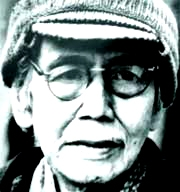

Họ Trần, Sinh ngày 12- Décembre 1913 ở làng Dưỡng Nô (Thừa Thiên). Học trường Đông Ba, Trường Pellerin( Huế). Có bằng thành chung. Hiện dạy tư ở Huế.
Đã viết giúp: Phong hoá, Ngày nay, Hà nội báo, Tiểu thuyết thứ năm, Tinh hoa... 
Đã xuất bản: Hận chiến trường (1936).
Xem thơ Thanh tịnh cái cảm giác trổi nhất của tôi là thấy một cái gì cứ dàn trải, dàn trải hoài mà lại lỏng. Có lẽ là một mặt hồ, cũng chưa đúng. Hồ còn có bờ, có hình nhất định. ở đây không có bờ, và nước - âu cũng phải gọi là nước - cứ chảy tràn lan. Những cảnh sắc in hình trên mặt nước vẫn thường xuyên thay đổi: có khi là một cây liễu rủ, có khi là một luỹ tre. Nhưng sắc dầu có khác, bao giờ cũng chỉ ngần ấy nước mà thôi. Có một lần người ta bỗng thấy trên mặt nước dựng lên một lâu đài xương máu [1]; nhưng khi người ta tới nơi nó lại biến mất. Thì ra một ảo cảnh.
Kể chỗ này cũng trống trải. Hình như đằng xa kia có vài ngọn núi. Nhưng đây vẫn là nơi hò hẹn của những ngọn gió bốn phương. Mỗi lần gió đến mặt nước không buồn cưỡng, cứ tự nhiên lướt theo chiều gió. Có khi người ta còn thấy nó vươn mình lên ngang tầm gió, tưởng chừng như nó muốn hoá thân làm gió. Nhưng qua lại thôi và rồi nó cũng được cái mềm mại, cái ẩn ước là bản sắc của nó.
Septembre - 1941
Mòn mỏi [2]
- Em ơi nhẹ cuốn bức rèm tơ
Tìm thử chân mây khói toả mờ
Có bóng tình quân muôn dặm ruổi
Ngựa hồng tuôn bụi cõi xa mơ
- Xa nhìn bên cõi trời mây
Chị ơi em thấy một cây liễu buồn.
- Bên rừng em hãy lặng nhìn theo,
Có phải chăng em ngựa xuống đèo?
Chị ngỡ như chàng lên tiếng gọi
Trên mình ngựa hí lạc vang reo.
- Bên rừng ngọn gió rung cây,
Chị ơi con nhạn lạc bầy kêu sương.
- Tên chị ai gieo giữa gió chiều,
Phải chăng em hỡi tiếng chàng kêu?
Trên dòng sông lặng em nhìn thư?
Có phải chăng người của chị yêu?
- Sóng chiều đùa chiếc thuyền lan,
Chị ơi con sáo gọi ngàn bên sông...
Ô kìa! Bên cõi trời đông
Ngựa ai còn ruổi dặm hồng xa xa
- Này lặng em ơi, lặng lặng nhìn
Phải chăng mình ngựa sắc hồng in?
Nhẹ nhàng em sẽ buông rèm xuống,
Chị sợ trong sương bóng ngựa chìm.
- Ngựa hồng đã đến bên yên,
Chị ơi, trên ngựa chiếc yên... vắng người.
(Đăng trên báo Tinh hoa.)
Tơ trời với tơ lòng
Còn nhớ hôm xưa độ tháng này
Cánh đồng xào xạc gió đùa cây.
Vô tình thiếu nữ cùng ta ngắm
Một đoạn tơ trời lững thững bay.
Tơ trời theo gió vướng mình ta,
Mỗi khắc bên nàng nhẹ bỏ qua
Nghiêng nón nàng cười, đôi má thắm,
Ta nhìn vơ vẩn áng mây xa.
Tìm dấu hoa xưa giữa cánh đồng.
Bên mình chỉ nhận lúa đầy bông
Tơ trời lơ lững vươn mình uốn
Đến nối duyên mình với… cõi không.
Thanh Tịnh
(đăng trên Phong Hóa)
Chú thích:
[1] Hận chiến trường, mấy vần thơ máu (1936)
[2] Phỏng theo chuyện "Barbe Bleur" của Perrault. Nhưng Thanh Tịnh đã tạo ra một không khí rất Á đông.